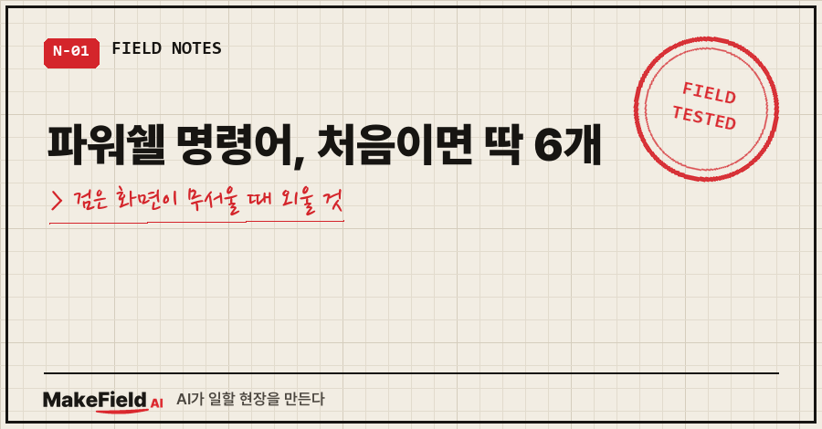
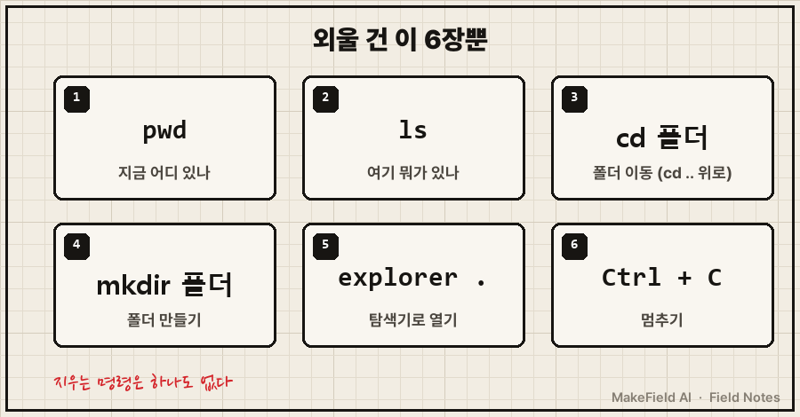
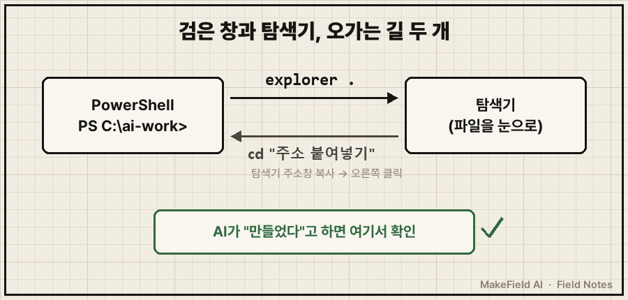
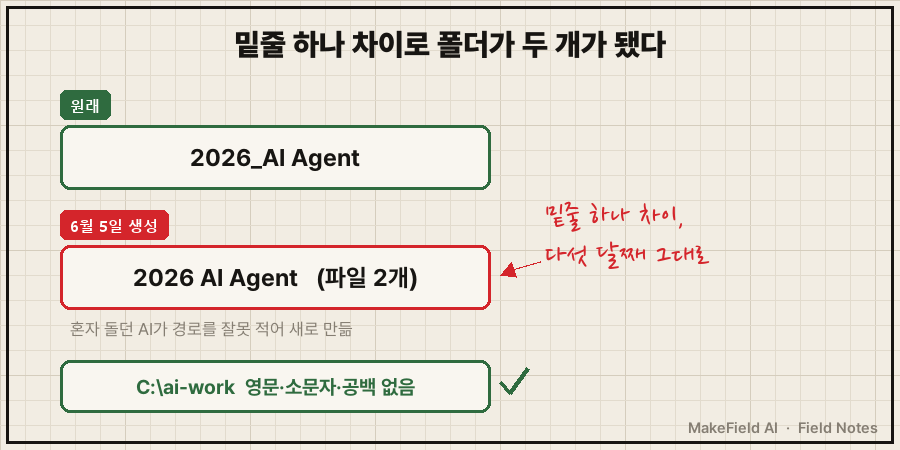

검은 창을 열어 놓고 커서만 깜빡이는 걸 한참 본 적 있으세요?
뭘 잘못 치면 컴퓨터가 망가질 것 같아서 그냥 닫게 되죠.
결론부터 적을게요. AI 에이전트를 쓰려고 외울 파워쉘 명령어는 pwd·ls·cd·mkdir·explorer .·Ctrl+C 여섯 개면 충분합니다. 이 여섯 개엔 지우거나 덮어쓰는 명령이 하나도 없고, 복사·삭제 같은 나머지 일은 AI에게 한국어로 시키면 돼요. (2026년 11월, 윈도우 기본 Windows PowerShell 5.1 기준)
지난 편에서는 서비스 안에 갇힌 메모리를 내 PC의 파일로 꺼냈어요. 이번 편에서는 그 파일이 있는 폴더로 AI를 데려가는 길, 검은 화면을 딱 필요한 만큼만 엽니다.
저는 개발로 시작해 15년 넘게 설비 자동화·제어 일을 해 왔는데, 정작 이 창은 필요할 때만 겨우 열던 사람이에요. 그래서 여섯 개로 줄였습니다.
1. 검은 화면, 정말 잘못 누르면 망가지나요?
창을 열고 닫거나 Ctrl+C를 누르는 것만으로는 컴퓨터가 망가지지 않아요. 사고가 나는 건 지우기·옮기기·덮어쓰기 명령인데, 이번에 외울 여섯 개는 전부 "보기·이동·만들기"뿐입니다.
터미널에서 여러분이 할 일은 AI를 올바른 폴더에 데려다 놓는 것까지예요. 그다음은 AI가 하고, 저는 결과만 눈으로 확인합니다.
2. 파워쉘 명령어 카드 6장

| 번호 | 이럴 때 | 윈도우 PowerShell | 맥 터미널 |
|---|---|---|---|
| 1 | 지금 내가 어느 폴더에 있지? | pwd | pwd |
| 2 | 이 폴더에 뭐가 있지? | ls | ls |
| 3 | 다른 폴더로 가고 싶다 | cd 폴더이름 / 한 칸 위 cd .. | 같음 |
| 4 | 새 폴더가 필요하다 | mkdir 폴더이름 | 같음 |
| 5 | 지금 폴더를 눈으로 보고 싶다 | explorer . | open . |
| 6 | 뭔가 안 끝난다, 멈춰야 한다 | Ctrl + C | Ctrl + C |
여기 없는 건 필요할 때 AI한테 물어보면 돼요.
3. 따라하기: 연습 폴더 하나 만들고 오가기
1단계. 창을 엽니다.
윈도우 키를 누르고 powershell을 쳐서 "Windows PowerShell"을 열어요. 관리자 권한은 필요 없습니다. 맨 앞줄이 이렇게 보이면 돼요.
PS C:\Users\사용자이름>PS는 "여기는 PowerShell"이라는 표시, 그 뒤가 지금 서 있는 폴더예요.
2단계. 연습 폴더를 만들고 들어갑니다.
mkdir C:\ai-work
cd C:\ai-work
pwd오늘 제 PC에서 pwd와 ls를 쳐 본 결과는 이런 모양이에요(임시 폴더에서 친 걸 경로만 연습 폴더로 바꿔 옮겼어요).
PS C:\ai-work> pwd
Path
----
C:\ai-work
PS C:\ai-work> ls
Mode LastWriteTime Length Name
---- ------------- ------ ----
d----- 2026-11-09 오전 1:26 notes
-a---- 2026-11-09 오전 1:26 7 memo.txtMode 칸이 d로 시작하면 폴더, -a면 파일이에요.
3단계. 탐색기와 오가는 길을 뚫어 둡니다.
explorer .의 점 하나는 "지금 이 폴더"예요. 제가 제일 많이 쓰는 명령인데, AI가 "파일을 만들었습니다"라고 할 때마다 이걸로 열어 진짜 있는지 눈으로 봐요. 말과 실제 파일이 다를 때가 있거든요.
반대로 탐색기에서 보던 폴더로 가고 싶으면, 탐색기 주소창을 복사해서 cd 뒤에 붙여 넣으면 돼요. PowerShell 창에선 마우스 오른쪽 클릭이 붙여넣기입니다.

4단계. 멈추는 법과 Tab 키.
안 끝나거나 멈춘 것 같으면 Ctrl + C, 그래도 모르겠으면 창을 닫아요. 폴더 이름은 앞 두세 글자만 치고 Tab 키를 누르면 나머지를 채워 줍니다.
이제 AI를 부르면 됩니다.
cd C:\ai-work
claudeGPT 쪽 Codex CLI는 codex, Gemini CLI는 gemini로 부르고, 폴더로 먼저 이동한 다음 부르는 방식은 셋 다 같습니다.
4. 여기서 이렇게 틀립니다: 띄어쓰기 있는 폴더로 cd가 안 돼요
띄어쓰기가 있는 폴더 이름은 따옴표로 감싸야 이동돼요. 따옴표가 없으면 PowerShell은 공백을 "여기서 다음 말이 시작된다"로 읽어서 경로를 두 조각으로 자릅니다. 오늘 임시 폴더 My Work로 다시 재현해 봤어요.
PS> cd C:\ai-work\My Work
A positional parameter cannot be found that accepts argument 'Work'.Work를 따로 떨어진 말로 받아서 "이걸 어디에 쓰냐"고 거절한 거예요. 마이크로소프트 공식 문서에도 "경로처럼 공백이 들어간 인자는 반드시 따옴표로 감싸야 한다"고 적혀 있습니다(Microsoft Learn, about_Quoting_Rules).
고치는 법은 두 가지예요.
- 경로 전체를 큰따옴표로:
cd "C:\ai-work\My Work" - 손으로 치지 말고 Tab으로 채우기:
cd .\My까지 치고 Tab을 누르면 PowerShell이'.\My Work'처럼 따옴표까지 붙여 줘요(오늘 PowerShell 5.1에서 확인).
그런데 저는 따옴표보다 이름 짓기에서 더 크게 데였어요.
제 작업 폴더 중 하나가 2026_AI Agent처럼 밑줄과 공백이 섞인 이름이거든요. 지난 6월 5일, 제가 자리를 비운 사이 혼자 돌던 AI 작업이 이 경로를 잘못 적어서 2026 AI Agent라는 밑줄 하나만 다른 쌍둥이 폴더를 새로 만들고 파일 2개를 거기 저장했어요.
닷새 뒤 전수 점검에서 처음 발견했고, 10월에 맥북을 새로 세팅할 때 또 "두 개가 공존한다"고 걸렸고, 오늘 확인해 보니 그 폴더는 아직 그대로 있습니다. 다섯 달째예요..
월별 폴더가 2026년_5월과 2026년 5월 두 벌로 갈라져 파일을 합치느라 고생한 얘기는 클로드 코드 설치 편에 적었는데, 같은 종류의 사고였죠.
그래서 지금 원칙은 하나예요. AI를 세워 둘 작업 폴더만큼은 처음부터 영문·소문자·공백 없이 짓습니다. 이 경로는 설정 파일, 자동 실행, AI 지시문에서 계속 다시 쓰여서 공백 하나가 몇 달 뒤 엉뚱한 데서 터지거든요. 문서 파일 이름은 한글이어도 괜찮아요.

한글 파일이 외계어로 보이거나 AI가 짜 준 스크립트가 멀쩡한 줄에서 죽는 증상은 PowerShell 한글 깨짐 글에 따로 정리해 뒀어요.
자주 묻는 질문
Q. 파워쉘 대신 cmd(명령 프롬프트)를 써도 되나요?
cd·mkdir·explorer .는 cmd에서도 똑같이 돼요. 다만 cmd에선 ls 대신 dir을 쓰고, 지금 위치는 cd만 치면 나옵니다. 저는 AI 도구 설치 안내가 대부분 PowerShell 기준이라 하나로 통일했어요.
Q. PowerShell 7을 따로 깔아야 하나요?
처음엔 안 깔아도 돼요. 윈도우 기본 5.1로 여섯 개 다 되고, 위 실측도 전부 5.1에서 했어요.
Q. 맥이면 뭐가 달라요?
'터미널' 앱을 열면 되고, pwd·ls·cd·mkdir는 그대로예요. 탐색기 열기만 explorer . 대신 open .입니다.
다음 편에선 이 창에서 부를 AI를 고릅니다. GPT·Claude·Gemini 셋 중 무엇으로 시작할지요.
이 글은 『직장인의 AI 오답 노트』 1-1장을 블로그용으로 다시 쓴 것입니다. 같은 증상의 원인과 점검표 전체는 책에 있어요. 종이책 예스24 https://www.yes24.com/product/goods/198006547 · 종이책 알라딘 https://www.aladin.co.kr/shop/wproduct.aspx?ItemId=404397482 · 전자책 예스24 https://www.yes24.com/product/goods/197975471